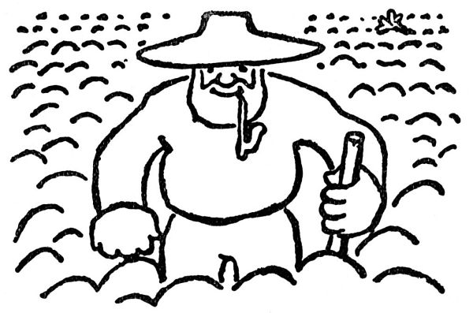

Jak se zakládají zahrádky
Zahrádky je možno zakládati několikerým způsobem; nejlepší je ten, že se na to vezme zahradník. Zahradník vám tam nasází všelijaké hůlky, proutí a košťátka, o kterých tvrdí, že jsou to javory, hlohy, bezy, vysokokmeny, polokmeny a jiné přírodní druhy; potom se ryje v hlíně, zobrací ji naruby a zase ji uplácá, udělá ze škvárů cestičky, nastrká tu a tam do země jakési zvadlé lupení, o němž prohlašuje, že to jsou pereny[1], naseje na příští trávník semínko, jež nazývá anglickým jílkem a psinečkem, psárkou, poháňkou a bojínkem, a potom odejde, nechávaje za sebou zahrádku hnědou a holou, jako byla dne prvého o stvoření světa; jen vám klade na srdce, abyste tu všechnu hlínu země denně pečlivě kropili, a až vzejde tráva, abyste si nechali přivézt na cestičky písek. Nu dobře.

Člověk by si myslel, že kropení zahrádky je zcela jednoduchá věc, zvláště má-li na to hadici. Záhy se ukáže, že hadice je neobyčejně úskočný a nebezpečný tvor, pokud není zdomestikována; svíjí se, skáče, vymršťuje se, dělá pod sebe spoustu vody a s rozkoší se hrouží do bahna, jež si takto vytvořila; načež se vrhne na člověka, jenž hodlá kropit, a ovine se mu kolem nohou; je nutno na ni šlápnout, a tu se vzepne a otočí se člověku kolem pasu a krku; zatímco s ní postižený zápasí jako s krajtou, obrátí ta obluda mosaznou hubičku vzhůru a chrlí mocný proud vody do oken na čerstvě pověšené záclony. Je nutno chopit ji energicky za hlavu a natáhnout ji co nejvíce možno; bestie zuří bolestí a začne rozstřikovat vodu nikoliv z hubičky, nýbrž z hydrantu a kdesi uprostřed těla. Je třeba napoprvé tří lidí, aby ji jakžtakž zkrotili; všichni pak opouštějí místo zápasu pomazáni blátem až po uši a bohatě zkropeni vodou; pokud se zahrádky týče, změnila se místy v mazlavé kaluže, zatímco na jiných místech žíznivě rozpukává.
Činíte-li toto denně, začne po čtrnácti dnech místo trávy vyrážet plevel. Je jedním z tajemství přírody, proč z nejlepšího travního semínka roste nejbujnější a nejježatější bejlí; snad by se mělo zasívat semínko plevele, aby z něho vypučel pěkný trávník. Po třech nedělích je trávník hustě zarostlý bodláčím a jinou neřestí plazivou nebo na loket zakořeněnou do země; chceš-li to vyrvat ze země, přetrhne se to hned u kořínku nebo to vezme s sebou celou hroudu hlíny. Je to tak: čím horší neřád, tím víc se má k světu.
Zatím se tajemnou přeměnou hmot změnily škváry cestiček v nejlepkavější a nejmazlavější jíl, jaký je možno si představit.
Nicméně je nutno vykořenit plevel z trávníků; pleješ, pleješ, a za tvými kroky se budoucí trávník obrací v holou a hnědou hlínu, jaká byla dne prvého o stvoření světa. Jen na dvou nebo třech místečkách vyráží cosi jako zelenavá plíseň, cosi jen nadechnutého, řiďounkého a podobného chmýří; není pochyby, to je travička. Chodíš kolem ní po špičkách a odháníš vrabce; a zatímco brejlíš do země, na angreštech a rybízech vyrazily první lístečky, než jsi se nadál; nikdy se jara nedohlídáš.
Tvůj poměr k věcem se změnil. Prší-li, pravíš, že prší na zahrádku; svítí-li slunce, nesvítí jen tak, nýbrž svítí na zahrádku; je-li noc, libuješ si, že si zahrádka odpočine.
Jednoho dne otevřeš oči, a zahrádka bude zelená, vysoká tráva se bude třpytit rosou a v houští růžových korunek budou vyhlížet nabobtnalá, brunátná poupata; a stromy zestarají, budou rozložité a temné, těžkých korun a plné trouchnivé vůně ve vlhkém stínu. A ty už nevzpomeneš na útlou, holou, hnědou zahrádku těchto dnů, na nejisté chmýří první travičky, na hubený rozpuk prvních pupenců, na všechnu tu hlinitou, chudou a dojemnou krásu zahrádky, jež je zakládána.
Nu dobře, ale nyní je nutno kropit a plet a vybírat z hlíny kamení.